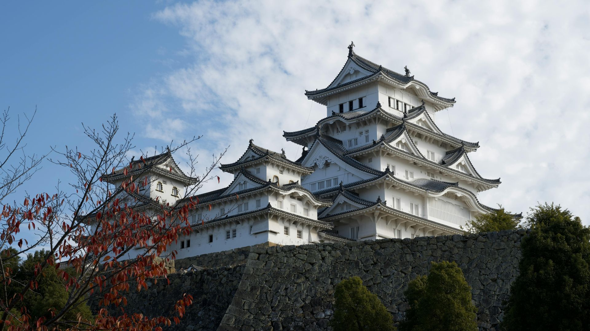
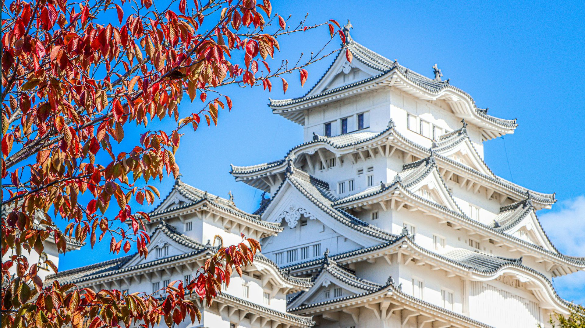
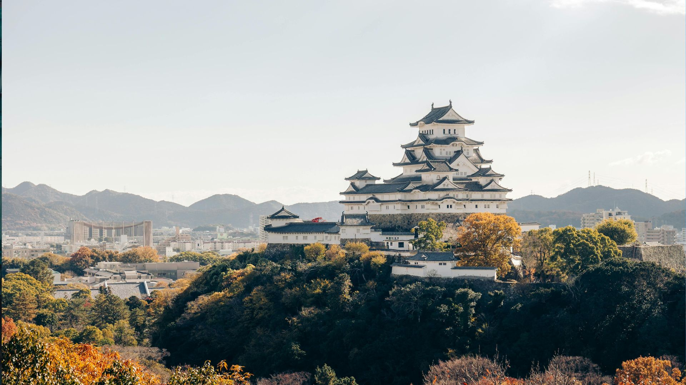

O Castelo de Himeji é considerado o castelo mais famoso e mais bem preservado de todo o Japão. Localizado na cidade de Himeji na província de Hyōgo, ele impressiona visitantes do mundo inteiro com sua arquitetura elegante e suas paredes brancas que parecem brilhar ao sol.
A estrutura atual do castelo foi construída no início do século XVII durante o Japão feudal. Ao longo de mais de 400 anos, o castelo conseguiu sobreviver a guerras, terremotos e até aos bombardeios da Segunda Guerra Mundial, tornando-se um dos poucos castelos originais que ainda existem no país.
O Castelo de Himeji é um exemplo impressionante da arquitetura defensiva japonesa. Sua estrutura foi projetada não apenas para ser bela, mas também para proteger seus moradores contra possíveis invasores.
A aparência branca elegante fez com que o castelo ganhasse o apelido de Castelo da Garça Branca, pois muitas pessoas dizem que sua estrutura lembra uma garça abrindo as asas para voar.
O Castelo de Himeji possui um sistema de defesa extremamente inteligente. Os caminhos dentro do complexo foram projetados para confundir inimigos, criando rotas cheias de curvas, portões e passagens estreitas.
Além da função defensiva, o castelo também servia como residência para senhores feudais e como símbolo de poder político durante o Japão feudal.
Hoje o Castelo de Himeji é um dos pontos turísticos mais visitados do Japão. Visitantes podem caminhar pelos corredores de madeira originais, subir os andares da torre principal e observar a vista da cidade ao redor.
Para quem visita o Japão, conhecer o Castelo de Himeji é uma experiência única. Além de ser um monumento histórico impressionante, ele representa uma parte importante da história e da cultura japonesa.



O Castelo de Himeji está localizado na cidade de Himeji, na província de Hyōgo, aproximadamente a 90 quilômetros de Osaka. Veja no mapa abaixo onde fica um dos castelos mais famosos do Japão.
Última atualização: Maio de 2026
↑